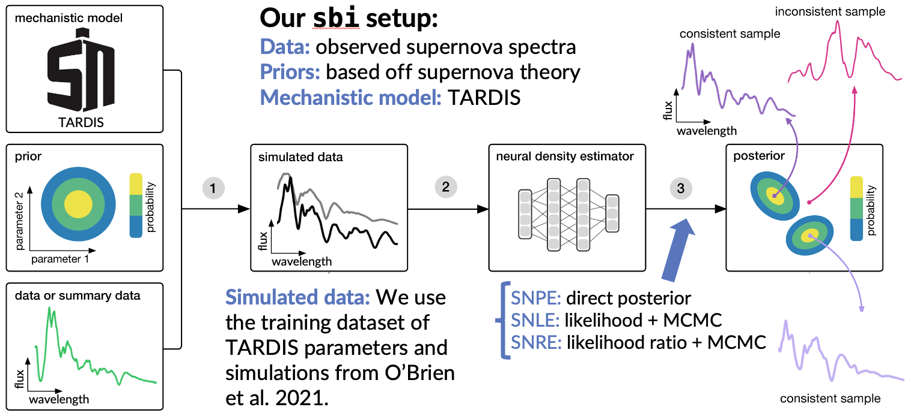

Our first nebular optical+NIR+MIR spectrum from JWST of the type Ia supernova SN 2021aefx is now published!
Our JWST program to study exploding white dwarfs in the near- and mid-infrared (NIR & MIR) will observe a total of 9 supernovae over 3 years, with two observations of each supernova approximately 100 days apart, allowing us to see the evolution over time. We are obtaining NIR & MIR spectra in the nebular phase (≳120d post-explosion) when the ejecta has expanded enough that we can see through all interior layers of the supernova. We will build a sample of normal type Ia supernovae and also observe peculiar white dwarf supernovae (which have never been observed in the MIR before!).
Our first JWST observations of the normal type Ia supernova SN 2021aefx were taken in August 2022 and the results of reducing and analyzing that spectrum are now published in Kwok et al. 2023! We found argon, an intermediate mass element, extending out to higher velocities than the iron-group elements (e.g. Fe, Ni, Co), meaning that the ejecta is stratified. This tells us that some kind of detonation (the explosion propogates supersonically) was involved. We also found multiple strong stable nickel (Ni-58) emission lines, which requires the high density burning found in a high-mass white dwarf progenitor. Further modeling by DerKacy et al. 2023 suggests SN 2021aefx exploded via a delayed detonation of a near-Chandrasekhar mass white dwarf, viewed at an angle of -30 degrees. To learn more, visit the links below!
I analyze the light curve (photometry) and spectroscopic evolution of supernovae. This observational data holds a wealth of information about the physical properties of a supernova. A light curve tracks the brightness of a supernova over time as it peaks in brightness and then fades away over the course of several months. Spectroscopy uses a prism to split the incoming light into its constituent wavelengths (think of a rainbow). Over time, as the supernova expands and cools, the light comes from deeper layers of the supernova. Thus, as we observe the photometric and spectroscopic evolution of a supernova, it allows us to study the internal structure.
Analyzing the photometry and spectroscopy of a supernova can allow us to measure or estimate physical properties of the supernova such as kinetic energy, ejecta mass, radius, temperature, velocity, and composition. We can compare models to our observations to determine likely energy sources and progenitor systems. I have experience analyzing photometry and spectra at early times (photospheric phase) and late times (nebular phase) as well as in the ultraviolet, optical, and infrared; each of these phases and wavelength regimes give us additional clues and insights into the physics of the explosion.
In my undergraduate work with Prof. Mansi M. Kasliwal and Dr. Ragnhild Lunnan at Caltech, I conducted a photometric and spectroscopic analysis of iPTF16asu, a broad-line Type Ic supernova (SN Ic-bl) caused by the core-collapse of a massive star that had been previously stripped of its outer hydrogen and helium envelopes. These supernovae have extremely high velocities about 10% of the speed of light (30,000 km/s), causing the spectral features to broaden via the Doppler shift; and they are the only type of supernovae that have been connected to gamma-ray bursts, another type of cosmic explosion characterized by highly collimated jets. iPTF16asu had an exceptionally fast rise time (~4 days) and was the first in its class of fast-evolving luminous transients.
I continued my work on SNe Ic-bl at Rutgers with Prof. Saurabh W. Jha to model the spectra of SN 2014ad with the radiative transfer code TARDIS (more below). In this work we published the first ultraviolet spectra of a SN Ic-bl. Follow the links below for more info!
I model the spectra of supernovae using the radiative transfer code TARDIS. TARDIS is a 1D Monte-Carlo radiative diffusion code that solves the equations governing photon-material interactions in a supernova. It takes luminosity, time, velocity, density, and element abundance profiles as input parameters and constructs a physically consistent synthetic supernova spectrum. Running in minutes, TARDIS is far less computationally expensive than a full hydrodynamic simulation, with the tradeoff that it makes some simplifying assumptions like spherical symmetry. Astronomy is an observational science so we “experiment” with computational models and compare the results to our observations. By constructing a TARDIS model that matches the observed spectrum, we can infer the physical structure and properties of a supernova.
At Rutgers, I modeled SN 2014ad, a Ic-bl supernova (described above), with TARDIS and published our results in Kwok et al. 2022. TARDIS helps me visualize which elements contribute to particular spectral features using a GUI created by a Google Summer of Code student that I helped mentor.

TARDIS simulations have >13 parameters, making it difficult and time consuming to manually investigate the parameter space. Furthermore, there are currently no posteriors on the parameters to give uncertainties and quantify degeneracies between the parameters, so there is no guarantee that your TARDIS fit is a unique solution. The TARDIS collaboration is developing a machine-learning emulator (Kerzendorf et al. 2021, O'Brien et al. 2021) which essentially learns to extremely accurately predict TARDIS synthetic spectra given input parameters, thereby skipping the actual running of TARDIS and yielding a speed up of a factor of over a million. This is one method of using machine learning to make exploring this large parameter space possible.
As a 2022 summer intern at the Flatiron Institute's Center for Computational Astrophysics (CCA), I worked with Prof. Shirley Ho and Dr. Miles Cranmer to develop a framework that generates parameter posteriors (most likely values and their uncertainty distribution) for TARDIS using a different machine-learning technique called simulation based inference, or likelihood-free inference. We used the sbi package to train a deep neural network that learned the probabilistic association between the synthetic spectra generated by TARDIS and the underlying parameters. We found that sbi offers a fast, promising avenue for estimating TARDIS model parameters from an observed supernova spectrum.
Poster I enjoy observing the night sky with telescopes and analyzing the data we obtain. Most recently, I remotely operated the Keck II telescope on Mauna Kea to collect near-infrared spectra of supernovae through the SIRAH (PI: Jha) and KITS (PI: Foley) programs. My work to reduce and calibrate spectra from SALT (Southern African Large Telescope) has led to multiple co-authorships. I also have in-person experience operating the telescopes (focus, flats, biases, filters, etc.) at the Sommers-Bausch Observatory at CU Boulder and the Etscorn Campus Observatory at New Mexico Tech.

Our first nebular optical+NIR+MIR spectrum from JWST of the type Ia supernova SN 2021aefx is now published!
Awarded 2022 NASA FINESST Fellowship to study the near-infrared spectral diversity of thermonuclear supernovae.

Our JWST proposal (GO 2072 Cycle 1+2+3, PI: Jha) was accepted! We will use JWST to collect nebular spectroscopy of exploding white dwarfs.
I'd love to hear from you! Please contact me if you have any questions.